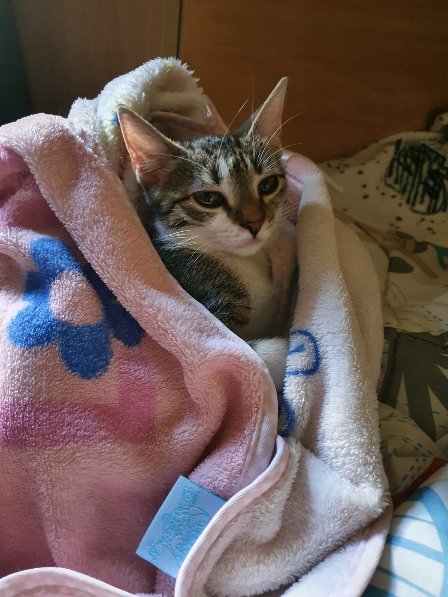

<div class="container">

  


  <div class="content">
    <div class="sub-content">
      <h1>Molly</h1>
      <p> <i class="fa-solid fa-paw"></i> European Shorthair </p>
      <span class="location"><i class="fa-solid fa-location-dot"></i> Nowhere</span>
    </div>
    <div class="data">
      <div class="inner-data">
        <span><i class="fa-solid fa-cake-candles"></i> Age </span>
        <p>24</p>
      </div>
      <div class="inner-data">
        <span><i class="fa-solid fa-mars-and-venus"></i> Gender</span>
        <p>Female</p>
      </div>
      <div class="inner-data">
        <span><i class="fa-solid fa-palette"></i> Color</span>
        <p>Tiger</p>
      </div>

    </div>
    <div class="details">
      <p> Molly really likes to sleep and watch birds.</p>
      <p><i class="fa-solid fa-burger"></i>  She likes to eat chicken.</p>
      <span class="adoption-h">Adoption Human: </span>
      <span> Alexandru Olaru</span>

    </div>

    <div class="button-container">
      <button class="round-button  message-button"  mat-raised-button  color="accent"><i class="fa-solid fa-paw"></i> Adopt</button>
    </div>

  </div>
</div>
